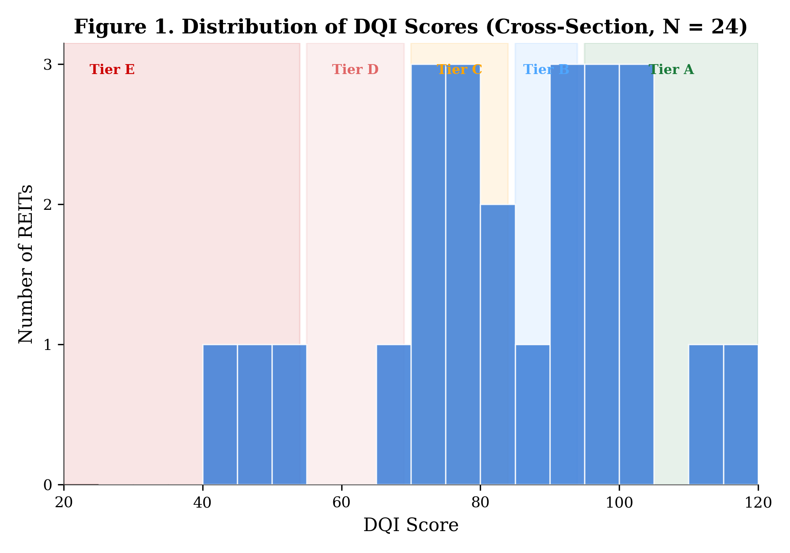
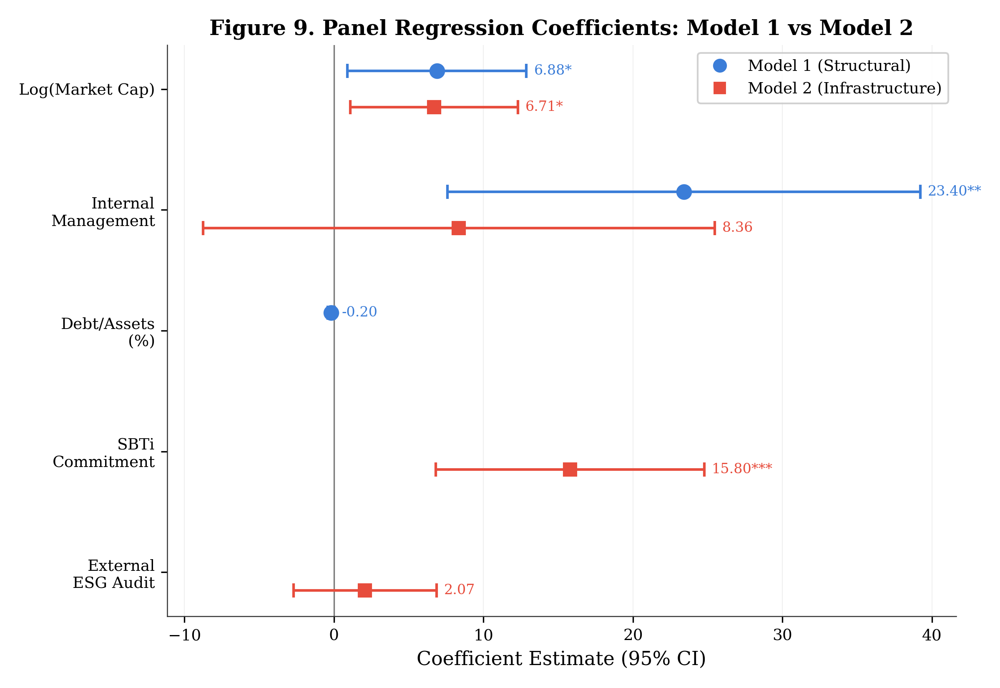
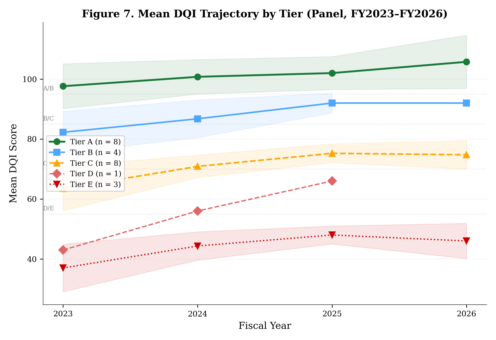

A census of all 24 UK listed REITs over four fiscal years reveals that the 72-point gap in ESG disclosure quality is not structural — it is driven by three specific infrastructure choices that any company can make within 18 months.
Read on SSRN →Across the complete population of UK listed REITs, DQI scores range from 115 (Landsec) to 43 (Custodian) — a 72-point gap on a 120-point scale. Eight companies (33%) achieve Tier A (Sector Leader); three (13%) remain in Tier E (Pre-Disclosure). The gap is not determined by sector: every major sub-sector contains at least one Tier A or B company.
Internally managed REITs score 32 points higher than externally managed ones (88.3 vs 56.0, p=0.001). This appears structural — but it isn't. When SBTi commitment and external assurance are controlled for in panel regression, the management structure effect drops to zero (β=8.4, not significant). The gap is entirely mediated by infrastructure choices.
Science Based Targets initiative commitment adds approximately 16 DQI points (β=15.8, p<0.001), controlling for firm size and management structure. SBTi validation functions as a costly signal that structurally compels specific, methodology-documented, auditable disclosure — the attributes the DQI scores at its highest level.
The DQI correlates with LSEG ESG ratings (ρ=0.892) but diverges systematically. Companies investing in reporting infrastructure (GPE: DQI 99, LSEG B+) are undervalued by commercial ratings, while companies with broad policies but weak infrastructure (Safestore: DQI 73, LSEG A−) are overvalued. Ratings reward policy breadth; the DQI captures disclosure depth.
Mean DQI rose from 73.8 to 83.2 over three years (+12.7%), with the largest gains among lower-scoring companies. Companies that adopted external assurance mid-panel showed 10–15 point step-changes. But the bottom quintile — all externally managed, none with SBTi, assurance, or GRESB — shows no convergence path under voluntary frameworks alone.



The Disclosure Quality Index is a 120-point instrument comprising 25 sub-indicators across seven dimensions, each scored on a 0–3 scale from "not disclosed" to "fully disclosed with methodology." The DQI scores disclosure quality — not ESG performance. A company with high emissions but transparent, assured reporting scores higher than a company with low emissions but vague, unverified descriptions.
The study population is the complete set of 24 UK listed REITs — a census, not a sample. Each company is scored across four fiscal years (FY2023–FY2026), producing 83 firm-year observations. Panel regression with random effects and entity-clustered standard errors identifies the determinants of disclosure quality.
The scoring codebook (v3.1) is available for research verification from the corresponding author.
If your company is included in the 2025 dataset, you can request your full DQI score and pillar breakdown as a complimentary research output — no obligation.
Request Score →